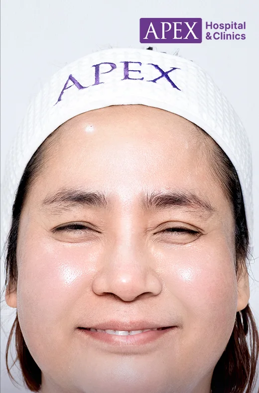
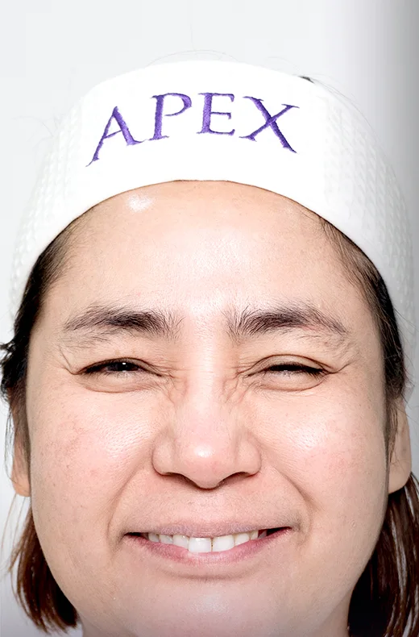

No. 1 · First half · Contour
Botox
Botox relaxes the muscle under a line or a wide jaw. It works on lines that come from movement, like frowning and squinting, and on a jaw muscle that makes the lower face look square.
It can't fill a deep fold, melt fat or shrink bone, so your doctor first checks that a muscle is causing the problem.
What it does
Botox quiets the muscle, and the line above it softens.
Act I
The muscle pulls
Frowning, squinting and clenching fold the skin above the muscle into lines. A strong chewing muscle widens the jaw.
Act II
A measured dose
Your doctor injects a set number of units into that muscle.
Act III
The line softens
The muscle works less for 3 to 4 months, so the skin above it lies flat and the jaw slims down.
Not its dance
- Deep folds and hollowsThey come from lost volume, so filler is the treatment for them.Pair it with Filler
- FatBotox relaxes muscle and leaves fat as it is.
- BoneA jaw that is wide from bone stays the same width.
Where it goes
The seating plan for Botox
Face
- Forehead10 to 20 units
- Between the brows15 to 25
- Crow's feet5 to 15 a side
- Jaw20 to 30 a side
- Mouth corners2 to 5 a side
- Chin4 to 8
Body
- Neck and face liftabout 20 to 40
- Shoulders20 to 50 a side
- Calves50 to 100 a side
- Underarm sweatabout 50 a side
The units are typical amounts, and your doctor sets the dose for your muscle. 50 units covers one or two face areas, and 100 units covers both sides of the jaw or the forehead, frown and crow's feet together.
Your fitting
Step by step at the clinic
How the evening goes
From the first dance to the last waltz
- Day 1 to 2Lines start to soften
- Week 1 to 2Full effect on lines
- Month 1 to 3Jaw looks slimmest
- Month 3 to 4Movement slowly returns
- After 90 daysReady for the next session
The grand entrance
Before and after
Botox at Apex. Drag the line across the mirror to compare.



ThenNow
Individual results vary.
Prices
Botox at Apex
| Brand | From, per 100 units |
|---|---|
| Aestox or Neuronox, Korea | 7,500 baht |
| Nabota, Korea | 8,700 baht |
| Xeomin, Germany | 13,900 baht |
| Dysport, UK (300 units) | 15,900 baht |
| Botox Allergan, USA | 17,999 baht |
Invitation
Korean Botox, 50 units
from 3,500 baht
Invitation
Korean Botox, 100 units
from 6,990 baht
Prices and promotions change, so check the latest on LINE @apexbeauty.
Before and after
Etiquette for the evening
Before you come
After you leave
- Right away
- Wash your face, patting dry
- Light makeup, patted on
- Eat as normal
- 2 hours
- Exercise again
- 3 to 4 hours
- Lie down as usual
- 24 hours
- Facials and massage
- Alcohol again
Questions
What people ask us
Does it hurt?
You feel a light pinch or sting at each point, and it passes in seconds.
Will my face look slimmer?
Yes if the width comes from the jaw muscle. Bone, fat or loose skin need a different treatment.
How often can I have it?
Leave at least 90 days between sessions. More often doesn't make it work better.
Can I exercise afterwards?
Wait about 2 hours, and skip hard exercise that day if you bruise easily.
When can I lie down?
After 3 to 4 hours you can lie flat or on your side as normal.
What if my eyes feel stiff?
The muscle relaxed more than planned. It eases as the Botox wears off, so come back for your doctor to check.
Can I have it while pregnant or breastfeeding?
Wait until after, since there isn't enough safety data.
Korean or American?
They differ in maker, formula and price. American Botox has the most research, and Korean brands cost less.
Sources
- Apex Medical Center, "What is a Botox injection", apexmedicalcenter.co.th/botox-injection
- AbbVie, BOTOX Cosmetic prescribing information
- American Academy of Dermatology, botulinum toxin FAQs
- Thai Red Cross, blood donor eligibility